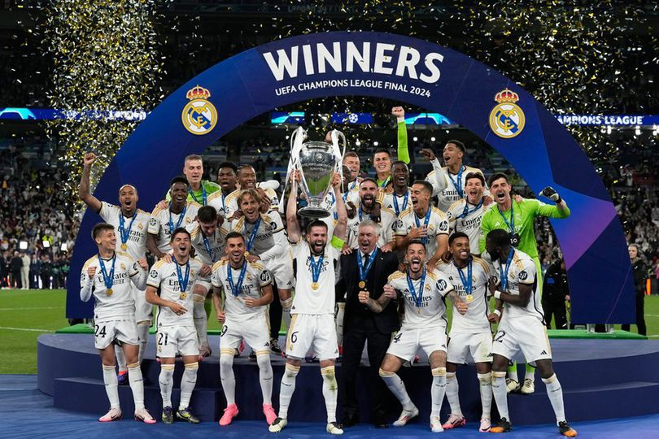

Real Madrid resmi ditahbiskan menjadi jawara Liga Champions musim 2023/2024. Kesuksesan ini diraih setelah mereka mengandaskan Borussia Dortmund dengan skor 2-0 di laga final, Minggu (2/6/2024) dini hari WIB. Dalam laga final yang digelar di Wembley, London ini, Real Madrid sejatinya nyaris tertekan di sepanjang babak pertama dan awal babak kedua Namun, mental juara Real Madrid berbicara. Los Blancos mampu mengunci kemenangan lewat gol yang dicetak Dani Carvajal dan Vinicius Junior. Berkat hasil ini, Real Madrid pun sukses mengangkat trofi Liga Champions untuk yang ke-15 kali, atau trofi keenam dalam satu dekade terakhir. Sementara itu, Dortmund harus puas kembali menjadi runner-up setelah kekalahan di edisi 2013 silam. Trofi Liga Champions kali ini sangat spesial bagi Real Madrid. Pasalnya, ini merupakan piala si kuping besar ke-15 yang mereka angkat di sepanjang sejarah klub. Pada final Liga Champions 2014, Real Madrid menggelorakan slogan La Decima. Real Madrid yang kala itu juga diasuh Carlo Ancelotti akhirnya meraih trofi ke-10 mereka dengan menumbangkan Atletico Madrid. Satu dekade setelah La Decima berlalu, Real Madrid kembali ke final. Kini, Real Madrid ke final dengan slogan La Decimoquinta. Ya, trofi juara kali ini adalah La Decimoquinta bagi El Real.
.jpg)